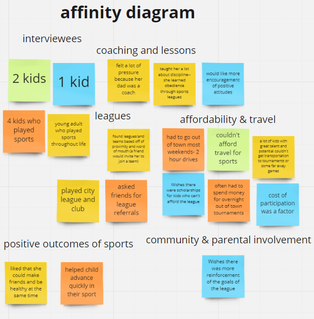
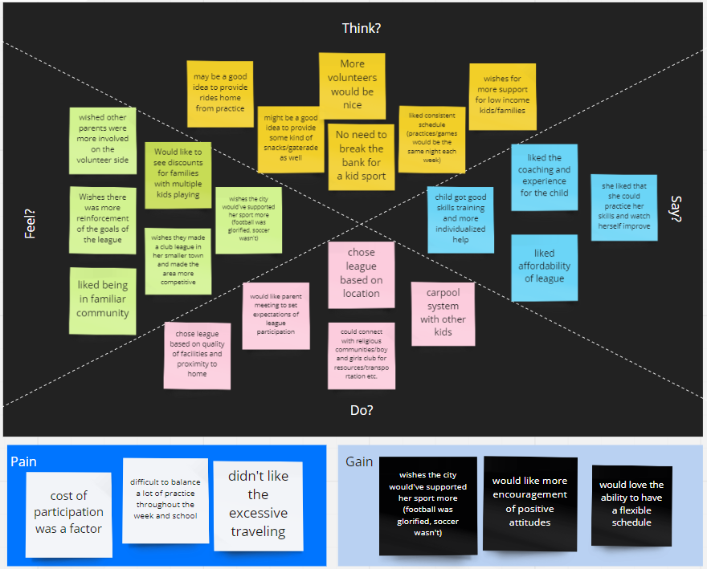
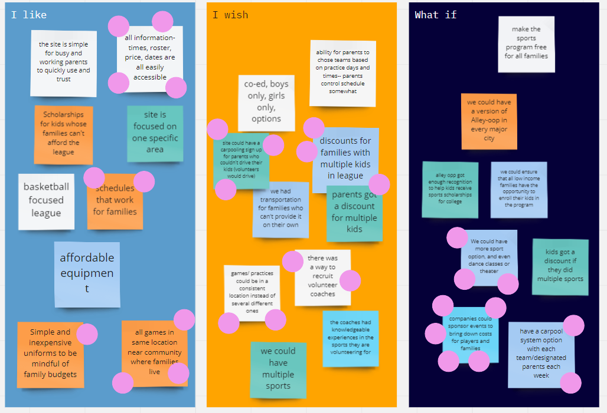
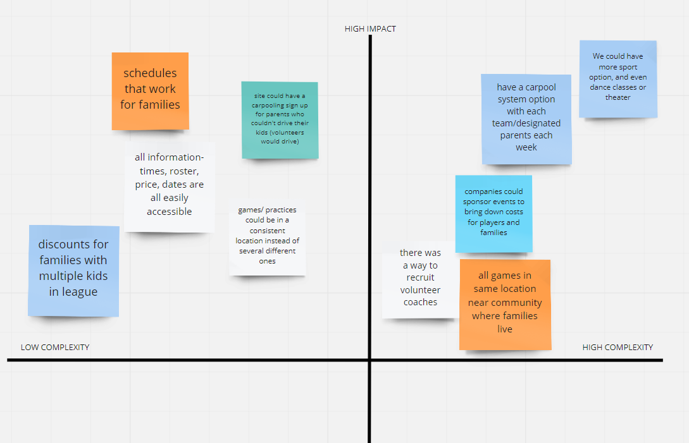
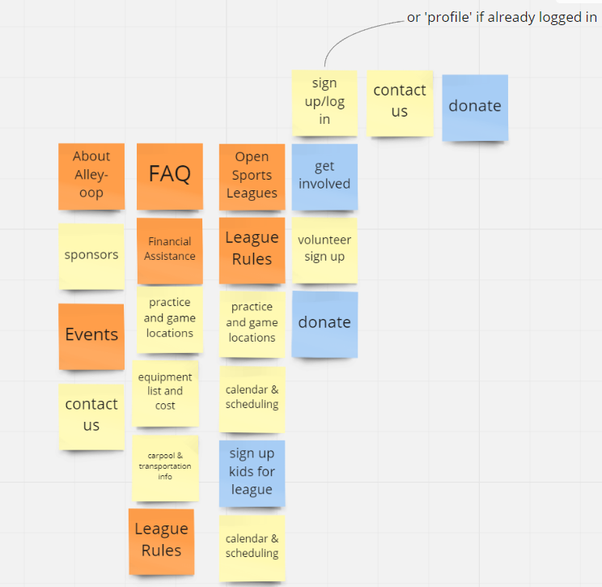
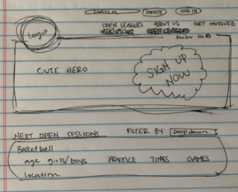

Our concept was for a non-profit, volunteer-based sports league called Alley-oop. The organization is based in
East Austin to help provide opportunities to kids and families in underserved communities
to solve a small portion of the inequality that exists in our society.
Duration:
3 Weeks
Role and Team Size:
Role: UI/UX Designer, Team Size: 4
Teammates: Caroline Meek, Emily Monagle, Mary Jendrzey, Lesley Harris
Tools Used:
Miro, Figma, Slack, InVsion, Trello
Key Skills:
Responsive Web Design, Interaction Design,
User Interface Design, Accessible Design,
Wireframing and Prototyping, High Fidelity Mockups,
Information Architecture
Overview
Problem
Working parents with low incomes want to give their kids opprotunities to play basketball but
struggle to take kids to practice on a consistent basis and struggle to afford league costs.
Solution
Alley-Oop keeps total league costs to minimum, offers carpooling options for children who need rides and allows users to sponser
families who may need a little extra help when it comes to league funding.
Target
We targeted Low income families with kids who play sports
and focused Alley-Oop's location in East Austin.
Research and Definition
This was the First step in our teams process. We followed the Design Thinking process throughout. The first thing
we wanted to do was understand who are user was and what pain points/problems they face trying to sign their kids up for sports.
We targeted people in a specific demographic since our product was specific to low-income families. After we learned of their struggles
we had to define not only who are specific user was but what problem we were trying to solve. Two of our teammates conducted research
and then we all came together to synthesize the data as a team.
User Interviews
Lesley Harris and Carloine Meek conducted 5 user interviews for this project. Our goals as a team
were to find out what parents in low income families needed most in terms of being able to get their
kids enrolled into sports programs. As a team we developed a user interview plan so we were all clear
about what was being asked during the interview process.
Pain Points
Some key pain points for users were that parents found it hard to make time and pay money to travel all over the state
for different tournaments. Parents also worry about affording league costs in general and wish there was a way to provide
scholarships for families who want to participate but need extra finacial assistance.
Goals
The main goal parents had for their kids was to get them involved into programs so that their kids could get to be active
and learn from having team experiences.

Affinity Diagram
After the reserach was complete we started synthesizing the data with an affinity diagram. We wrote notes from the
interviews onto sticky notes and grouped them together to try and find commonalities between the interviewees.

Empathy Map
After we found commonalities in our iterviewees we wanted to try and really understand our users on another level.
We created an empathy map to help guide us to figure out what our users goals and pain points were as well as
what they were feeling, thinking and saying about envolving their children in sports leagues.

User Persona
Once we felt we had a clear understanding of who are users were going to be we created a user persona. Jen is a single mom
who has two kids. She struggles managing her work life with her kids extra curicular activities but wants them to be able to
learn and grow by playing sports.

User Scenario Diagram
We wanted to understand how our users would learn about our app and use it successfully so we jotted down a scenario in which
Jen would use Alley-Oop to get more information about the basketball league. This diagram outlines her steps to get more information as well as
acknowledging her goals, potential risks and emotions during this process.
User Insight Statement
Families with children in underserved communities need accessible sports leagues in their neighborhoods because participating in a sport
helps kids learn valuable life skills, and income and location are often barriers that take away these opportunities.
Value Proposition Statement
Our organization Alley-oop is developing a non-profit, volunteer based sports league in East Austin to help provide
opportunities to kids and families in underserved communities to solve a small portion of the inequality that exists
in our society.
We're better because our concept focuses on the real, day-to-day needs of the families in East Austin, and makes sports accessible to all.
We're believable because our organization is a designed specifically to meet the needs of the families and kids we want to serve.
Ideation
After we defined our user and the problem it was time to think of ways to solve the problem. This led us to the ideate phase of the Design Thinking Process.
This is wehere we thought of potential solutions and brainstormed as a team. Some of the methods we used were I Like, I wish, What if diagrams, Feature Prioritizations
and card sorting.

I Like, I Wish, What if Diagram
To start thinking of potential solutions for our user pain points we did a I Like I Wish What If activity.We chose this method becuase it
helps start the brainstorming process by thinking of solutions in more ways than one. After we came up with various ideas
we each did a round a silent voting putting two dots on the ideas we liked the best.

Feature Prioritization Matrix
From our favorite ideas we further organized them into a feature prioritization matrix to determine which ideas would be the best to implement
in such a short amount of time. We chose from the ideas that were low in complexity but high in impact.

Card Sort
Once we knew which features we wanted to include in the site we had to figure out how to organize them. We all organzied the ideas
together as a team to figure out which layout made the most sense to us.
Competitor Analysis
Our main competitor was the YMCA. They have more affordable leagues and have opprotunitites for families in need to recieve financial aid assistnace.
The only thing about the YMCA is that their locations are spread all over the metropolitan area making it hard to access games in more than one area of town.
Wireframing and Prototyping
In this phase of the Design Thinking Process we started to make our ideas come to life by prototyping. We also tested our ideas
to see what improvements we could make after we did our low fidelity prototyping.

Paper Sketch
This was the first layout we had designed. It feataured a hero image with a sign up button that was clearly in view with
sessions available right below it. This design continued into our low fidelity prototyping.
Low Fidelity Wireframing
We tried making our own designs for this section of the process because we were not sure how we wanted to lay things out and wanted
as many ideas as possible to try and find the best design. Eventually we all came together and designed a set of 5 pages so that we could
move forward in the process.

Style Guide
After we decided what layouts we wanted to use for each featured page we decided on styles. Together we came up with the fonts, the images and the
signup buttons. Lesley Harris Designed the Logo and I designed the buttons for the pages.
User Testing
We tested our low fidelity to see what improvements needed to be made to make sure the site was as easy to use as possible. Some things that still needed
improvement were the hero images. Our users felt as though they did not accurately represent our target kids. People also wanted to be able to access the
Sign up link on every page so that they did not have to hunt for the link. Lastly people could not easily access the home page because there was no way to do that
in the navigation bar.
High Fidelity Mockups
This was the final step of our design process. We polished everything as much as we could before the deadlines.

Home Page
Features information about what Alley-Oop is, a way to donate or get involved, provides available sessions for kids and
gives parents an easy way to access the sign-up page.

About Us Page
Features information about what Alley-Oop is and what our mission is, provides parents with quotes from parents who have enrolled
their kids in our league in the past, and gives parents a list of benifits their kids will have as a result of being in the league.
Sign-up button is on the hero image and is easy to spot.

League Info Page
Features information about equipment costs, locations and what age group we serve. There are also multiple ways to sign up on this page.
You can acces the sign up on the top or bottom of the page.

Get Involved Page
Features a sign up button on the hero image, as well as cards for different opprotunities to contribute to Alley-Oop. You can become a volunteer,
donate or sponser a family in need. The page also has carpooling information so parents can sign up to carpool or sign their kid up to get a ride
from the parent carpooling that day.

Contact Us Page
Features a way for users to contact us directly through the site or gives the user the information for reaching us by phone or email if that is preferrable.
Again you can choose to access sign ups through this page.
Next Steps
Mobile Version
Make a mobile version of the site! Based on our research, our users access the internet most often from their phones.
However, they also want access to desktop when they need to find more information.
Code and Research
We would code website and continue to test and research needs of users if we had more time.
Expand
Expand Alley-oop to include more sports, and theater, dance and music programs!